Using neural networks to parameterize advection in L96
Contents
Using neural networks to parameterize advection in L96¶
%matplotlib inline
import math
import matplotlib.pyplot as plt
import numpy as np
from IPython.display import HTML
from L96_model import (
L96,
RK2,
RK4,
EulerFwd,
L96_eq1_xdot,
integrate_L96_2t,
)
from matplotlib.animation import FuncAnimation
time_method = RK4
Introduction¶
We are only going to use the single equation model from Lorenz (1996), or equation 3.1:
The reason we do this is because the advection term has a much larger control on the stability of the system than the scale-interaction term. It is fairly difficult to learn a model for the sub-grid scale term that causes L96 to go unstable so long as the timestep is sufficient to keep the advection term stable.
We still want to to look into the stability of a learned parameterization, but to explore the stability in more detail we are going to focus on learning a neural-network for the advection.
Building a 1d and 2d version of the single-equation L96 model:¶
The ‘1d’ in time, or advectionless version of L96 reduces to:
the steady state solution is simply:
and the time-dependent solution is an exponential:
We are going to generate both 2d (w/ advection) and 1d (w/o advection) versions of the L96 model. The 2d model will then be used as training data to build a non-local neural network that can reproduce the effect of including the advection term.
# - This is a standard GCM class including a polynomial parameterization in rhs of equation for tendency.
# In this experiment we will not be using the parameterization in this class but have left it for generality.
class GCM:
def __init__(self, F, parameterization, time_stepping=RK4):
self.F = F
self.parameterization = parameterization
self.time_stepping = time_stepping
def rhs(self, X, param):
return L96_eq1_xdot(X, self.F) + self.parameterization(param, X, self.F)
def __call__(self, X0, dt, nt, param=[0]):
# X0 - initial conditions, dt - time increment, nt - number of forward steps to take
# param - parameters of our closure
time, hist, X = (
dt * np.arange(nt + 1),
np.zeros((nt + 1, len(X0))) * np.nan,
X0.copy(),
)
hist[0] = X
for n in range(nt):
X = self.time_stepping(self.rhs, dt, X, param)
hist[n + 1], time[n + 1] = X, dt * (n + 1)
return hist, time
# - This is the same as the GCM with one notable exception.
# We have set the advection flag to False in the RHS of the L96 equation.
class GCM_1d:
def __init__(self, F, parameterization, time_stepping=time_method):
self.F = F
self.parameterization = parameterization
self.time_stepping = time_stepping
def rhs(self, X, param):
return L96_eq1_xdot(X, self.F, advect=False) + self.parameterization(
param, X, self.F
)
def __call__(self, X0, dt, nt, param=[0]):
# X0 - initial conditions, dt - time increment, nt - number of forward steps to take
# param - parameters of our closure
time, hist, X = (
dt * np.arange(nt + 1),
np.zeros((nt + 1, len(X0))) * np.nan,
X0.copy(),
)
hist[0] = X
for n in range(nt):
X = self.time_stepping(self.rhs, dt, X, param)
hist[n + 1], time[n + 1] = X, dt * (n + 1)
return hist, time
Sample configuration¶
First we will run the 2d and 1d version of the model with a modest forcing of $F=10$.
We are going to try to simulate the effect of climate model drift on parameter space by running the same model but with $F=20$.
# Chose a modest forcing and simulate for 100 cycles
Forcing, dt, T = 10, 0.01, 100
Forcing_x10 = 20 # Forcing*10
# Choose an random set of initial conditions
b = 10
init_cond = b * np.random.randn(8)
# ----------------------------------------------------------------
# We create the template 2d GCM here with the polynomial parameterization
# this model will be used to generate training data to learn the advection term.
naive_parameterization = lambda param, X, F: np.polyval(param, X)
gcm_2d = GCM(Forcing, naive_parameterization)
# ----------------------------------------------------------------
# We also create a super GCM for simulation with the forcing of 100.
# This will be used as the truth when we test the ability of the 1d model with the neural network to
# work outside of the parmameter space it was trained.
gcm_2d_x10 = GCM(Forcing_x10, naive_parameterization)
# ----------------------------------------------------------------
# Finally,we build the 1d GCM including the polynomial parameterization,
# and we create the corresponding super GCM with forcing squared.
gcm_1d = GCM_1d(Forcing, naive_parameterization)
gcm_1d_x10 = GCM_1d(Forcing_x10, naive_parameterization)
# Running the 2d and 1d versions of the GCM and GCM with F=100 ("_x10")
x2d, t2d = gcm_2d(
init_cond,
dt,
int(T / dt),
[
0.0,
],
)
x2d_x10, t2d_x10 = gcm_2d_x10(
init_cond,
dt,
int(T / dt),
[
0.0,
],
)
x1d, t1d = gcm_1d(
init_cond,
dt,
int(T / dt),
[
0.0,
],
)
x1d_x10, t1d_x10 = gcm_1d_x10(
init_cond,
dt,
int(T / dt),
[
0.0,
],
)
Metrics:¶
We are going to track the momentum and energy of L96 via the following metrics:
Energy:¶
These metrics are chosen to track the system. We are looking for a conservative property of the L96 system. It turns out in the single equation form of the L96 problem one of these two metrics is conserved by the advection process, which is the energy like term.
for tup in [2, T]:
F, ax = plt.subplots(1, 2, figsize=(10, 4))
a = ax.ravel()[0]
a.plot(t1d, np.sum(x1d, axis=1), label="1d", color="r", linewidth=2)
a.plot(t2d, np.sum(x2d, axis=1), label="2d", color="b", linewidth=2)
a.legend()
a.grid(True)
a.set_title("L96 momentum")
a.set_xlabel("t")
a.set_ylabel(r"$\sum_k X_k$")
a.set_xlim(0, tup)
a = ax.ravel()[1]
a.plot(t1d, np.sum(x1d**2, axis=1), label="1d", color="r", linewidth=2)
a.plot(t2d, np.sum(x2d**2, axis=1), label="2d", color="b", linewidth=2)
a.legend()
a.grid(True)
a.set_title("L96 energy")
a.set_xlabel("t")
a.set_ylabel(r"$\sum_k X_k^2$")
a.set_xlim(0, tup)
F.tight_layout();

Demo: Conservation of energy in L96¶
To demonstrate the conservation of energy in L96 advection we build a model with 0 forcing and 0 damping.
Note that the cyan line is an experiment only undergoing forcing by the advection term. The momentum is clearly not conserved, but the energy is.
# Zero the forcing
Forcing_demo = 0
# Zero the damping via a linear parameterization term:
P_nodamp = [1.0, 0.0]
# Running the 2d and 1d versions of the GCM and GCM with squared forcing ("s")
gcm_2d_demo = GCM(Forcing_demo, naive_parameterization)
# The parameterization here is countering the decay term to demonstrate the conservation of this system
x2d_demo, t2d_demo = gcm_2d_demo(init_cond, dt, int(T / dt), P_nodamp)
for tup in [2, T]:
F, ax = plt.subplots(1, 2, figsize=(10, 4))
a = ax.ravel()[0]
a.plot(
t2d_demo,
np.sum(x2d_demo, axis=1),
label="2d, F=0 no damp",
color="c",
linewidth=2,
)
a.plot(t2d, np.sum(x2d, axis=1), label="2d, F=10", color="b", linewidth=2)
a.legend()
a.grid(True)
a.set_title("L96 momentum")
a.set_xlabel("t")
a.set_ylabel(r"$\sum_k X_k$")
a.set_xlim(0, tup)
a = ax.ravel()[1]
a.plot(
t2d_demo,
np.sum(x2d_demo**2, axis=1),
label="2d, F=0 no damp",
color="c",
linewidth=2,
)
a.plot(t2d, np.sum(x2d**2, axis=1), label="2d, F=10", color="b", linewidth=2)
a.legend()
a.grid(True)
a.set_title("L96 energy")
a.set_xlabel("t")
a.set_ylabel(r"$\sum_k X_k^2$")
a.set_xlim(0, tup)
F.tight_layout();

Building a dataset of advection tendencies to learn¶
In the next section we are going to create a dataset of advection tendencies to learn
# The first set of data to learn is built with the standard forcing
obs = gcm_2d
model = gcm_1d
N = 50000
X = []
Xm1 = []
Xm2 = []
Xp1 = []
Adv = []
# randomize the initial condition and run 1000 time-step spin up with the real world model
init_condr = 10 * np.random.randn(8)
x_2, _ = gcm_2d(
init_condr,
0.01,
1000,
[
0.0,
],
)
for ti in range(N):
# Set the initial condition from the spin up/2d model
init_condr_up = x_2[-1, :]
# Real world values
x_2, _ = obs(
init_condr_up,
0.01,
1,
[
0.0,
],
)
# Simple model values
x_1, _ = model(
init_condr_up,
0.01,
1,
[
0.0,
],
)
# This is the difference in the tendency term due to neglecting 2d processes per time-step
Adv.append((x_2[-1, :] - x_1[-1, :]).ravel() / dt)
# Storing the state variable and its rolled forms for plotting and learning convenience
X.append(x_1[-1, :].ravel())
Xm1.append(np.roll(x_1[-1, :], 1).ravel())
Xm2.append(np.roll(x_1[-1, :], 2).ravel())
Xp1.append(np.roll(x_1[-1, :], -1).ravel())
X = np.array(X)
Xm1 = np.array(Xm1)
Xm2 = np.array(Xm2)
Xp1 = np.array(Xp1)
Adv = np.array(Adv)
# We use a second set of learning data with the F=20 forcing
obs = gcm_2d_x10
model = gcm_1d_x10
N = 50000
X_x10 = []
Xm1_x10 = []
Xm2_x10 = []
Xp1_x10 = []
Adv_x10 = []
# randomize the initial condition and run 1000 time-step spin up with the real world model
init_condr = 10 * np.random.randn(8)
x_2, _ = gcm_2d(
init_condr,
0.01,
1000,
[
0.0,
],
)
for ti in range(N):
# Set the initial condition from the spin up/2d model
init_condr_up = x_2[-1, :]
# Real world values
x_2, _ = obs(
init_condr_up,
0.01,
1,
[
0.0,
],
)
# Simple model values
x_1, _ = model(
init_condr_up,
0.01,
1,
[
0.0,
],
)
# This is the difference in the tendency term due to neglecting 2d processes per time-step
Adv_x10.append((x_2[-1, :] - x_1[-1, :]).ravel() / dt)
# Storing the state variable and its rolled forms for plotting and learning convenience
X_x10.append(x_1[-1, :].ravel())
Xm1_x10.append(np.roll(x_1[-1, :], 1).ravel())
Xm2_x10.append(np.roll(x_1[-1, :], 2).ravel())
Xp1_x10.append(np.roll(x_1[-1, :], -1).ravel())
X_x10 = np.array(X_x10)
Xm1_x10 = np.array(Xm1_x10)
Xm2_x10 = np.array(Xm2_x10)
Xp1_x10 = np.array(Xp1_x10)
Adv_x10 = np.array(Adv_x10)
Choosing a parameter to parameterize from¶
If we were simply looking at data and knew that the advection term was a missing force, we might start by looking at correlations with $X_k$ values, but we would quickly relize that this is not effective.
Even taking part of the actual advection term does not yield a useful feature parameter.
In principle we should be able to learn a parameterization with all combinations of polynomials including all $X_k$’s, which should yield something close to the right answer.
plt.figure()
plt.plot(X, Adv, "k.")
plt.xlabel("$X_{k}$")
plt.ylabel("Advection")
plt.figure()
plt.plot(Xm1, Adv, "k.")
plt.xlabel("$X_{k-1}$")
plt.ylabel("Advection")
plt.figure()
plt.plot(Xp1, Adv, "k.")
plt.xlabel("$X_{k+1}$")
plt.ylabel("Advection")
plt.figure()
plt.plot(Xm2 - Xp1, Adv, "k.")
plt.xlabel("$X_{k-2}-X_{k+1}$")
plt.ylabel("Advection")
Text(0, 0.5, 'Advection')
 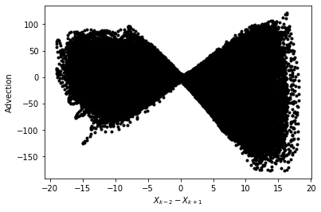
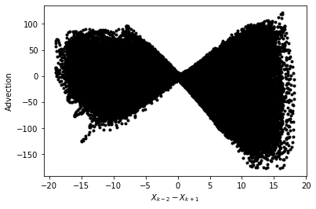
Let’s now just assume that we knew the form of the advection term. We now get something that looks like a 1:1 linear relationship between the observed advection term and the correct feature parameter. It is not perfect because the values we are using for $X_k$ are not consistent with the RK4 time stepping (if we used forward Euler we would get a perfit fit).
# We are going to assume we know the feature variable that we need to train the model.
# However, because of sampling across a time-step we will not fit a perfect 1:1,
# we end up with something very close to 1:1, but we will use a higher order polynomial that will
# fail when used outside the training data.
# First we will tune with the original F=10 output
plt.figure(figsize=(5, 4))
Feature = -Xm1 * (np.array(Xm2) - np.array(Xp1))
plt.plot(Feature, Adv, "r.")
plt.xlabel("$X_{k-1}(X_{k-2}-X_{k+1})$")
plt.ylabel("Advection tendency")
# This parameterization might fail when used outside of the training data.
# Note if we used the Forward Euler timestepping we would get closer to a 1:1 fit for the data.
P = np.polyfit(np.array(Feature).ravel(), np.array(Adv).ravel(), 1)
print("Fit (slope/bias): ", P)
FS = [-200, 200]
plt.plot(FS, np.polyval(P, FS), "g-", label="polynomial parameterization")
plt.plot(FS, FS, "k--", label="1:1")
plt.xlim(FS)
plt.ylim(FS)
plt.grid(True)
Fit (slope/bias): [ 1.00356256 -0.08315718]
# Create a new 1d GCM with a parameterization for the advection based on the known advection parameter
advection_parameterization = lambda param, X, F: np.polyval(
param, -np.roll(X, 1) * (np.roll(X, 2) - np.roll(X, -1))
)
gcm_1d_padv = GCM_1d(Forcing, advection_parameterization)
gcm_1d_padv_x10 = GCM_1d(Forcing_x10, advection_parameterization)
# Here is the 1d GCM with the learned advection via the linear parameterization
xplinear, tplinear = gcm_1d_padv(init_cond, dt, int(T / dt), P)
# And the same 1d GCM applied out of sample
xplinear_x10, tplinear_x10 = gcm_1d_padv_x10(init_cond, dt, int(T / dt), P)
def CompExps(Exp1, ExpN):
# Exp1 - reference experiment list
# ExpN - list of comparison experiments
try:
T1 = Exp1[0]
X1 = Exp1[1]
L1 = Exp1[2]
F, ax = plt.subplots(1, 2, figsize=(10, 4))
a = ax.ravel()[0]
a.plot(T1, np.sum(X1, axis=1), label=L1, color="k", linewidth=3)
a = ax.ravel()[1]
a.plot(T1, np.sum(X1**2, axis=1), label=L1, color="k", linewidth=3)
F2, ax2 = plt.subplots(1, figsize=(5, 4))
for Exp in ExpN:
TN = Exp[0]
XN = Exp[1]
LN = Exp[2]
a = ax.ravel()[0]
a.plot(TN, np.sum(XN, axis=1), label=LN, linewidth=2)
a = ax.ravel()[1]
a.plot(TN, np.sum(XN**2, axis=1), label=LN, linewidth=2)
_X = []
_Y = []
for ii in range(1, 100, 1):
_X.append(np.percentile(np.sum(X1[int(5 // dt) :] ** 2, axis=1), ii))
_Y.append(np.percentile(np.sum(XN[int(5 // dt) :] ** 2, axis=1), ii))
ax2.plot(_X, _Y, ".-", label=LN)
for ii in range(2):
a = ax.ravel()[ii]
a.legend()
a.grid(True)
ax[0].set(ylabel=r"$\sum_k X_k$", xlabel=r"$t$")
ax[1].set(ylabel=r"$\sum_k X_k^2$", xlabel=r"$t$")
F.tight_layout()
ax2.grid(True)
ax2.set(
xlabel="e 2d model",
ylabel="e 1d model w/ param",
title="q-q plot of energy in 2d and parameterized model",
)
LIM = np.nanmax(list(_X) + list(_Y))
ax2.set_xlim(0, LIM * 1.1)
ax2.set_ylim(0, LIM * 1.1)
ax2.plot([0, LIM], [0, LIM], "y-")
pass
except:
pass
# This (should) learn a stable 'parameterization' for the advection that is very close to the real advection term.
CompExps(
[t2d, x2d, "2d"],
[
[tplinear, xplinear, "1d w/ linear"],
],
)

# It even extrapolates to the F=20 model
CompExps(
[t2d_x10, x2d_x10, "2d"],
[
[tplinear_x10, xplinear_x10, "1d w/ linear"],
],
)

What if we chose the wrong feature?¶
It turns out you can find features that are approximately correct and build a decent model for the advection
# Now we use a feature that is wrong to train the model
plt.figure()
Feature = -(np.array(Xm2) - np.array(Xp1) * np.array(Xm1))
plt.plot(Feature, Adv, "r.")
plt.xlabel("$(X_{k-1}-X_{k+1})$")
plt.ylabel("Advection tendency/Forcing")
P_wrong = np.polyfit(np.array(Feature).ravel(), np.array(Adv).ravel(), 1)
FS = np.sort(np.array(Feature).ravel())
plt.plot(FS, np.polyval(P_wrong, FS), "g-", label="polynomial parameterization");
# Create a new 1d GCM with a 2d parameterization
advection_parameterization_wrong = lambda param, X, F: np.polyval(
param, -(np.roll(X, 2) - np.roll(X, -1) * np.roll(X, 1))
)
gcm_1d_padv_wrong = GCM_1d(Forcing, advection_parameterization_wrong)
# Here is the 1d GCM with the learned advection
x_wrongp, t_wrongp = gcm_1d_padv_wrong(init_cond, dt, int(T / dt), P_wrong)
# This goes unstable very quickly.
# The neural network thus must be trained pretty well to avoid these instabilities.
CompExps(
[t2d, x2d, "2d"],
[
[t_wrongp, x_wrongp, "1d w/ wrong linear"],
],
)
/tmp/ipykernel_2531/3080806922.py:3: RuntimeWarning: overflow encountered in multiply
param, -(np.roll(X, 2) - np.roll(X, -1) * np.roll(X, 1))
/usr/share/miniconda/envs/L96M2lines/lib/python3.9/site-packages/numpy/lib/polynomial.py:771: RuntimeWarning: invalid value encountered in multiply
y = y * x + p[i]
 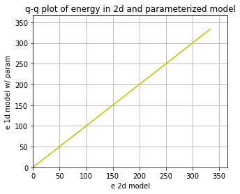
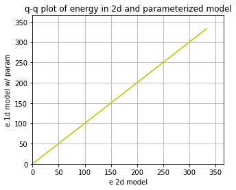
Using the wrong feature gave us a very unstable model with advection that does not work.
In the following, we will try to learn the advection from a neural network. This result shows that we need to do something reasonable to have a stable system.
Using the 3-layer non-local neural network¶
Now we can forget about neading to know the right form of the advection term. We are instead just going to throw the information from the advection scheme to the non-local neural network and let it learn the advection for itself.
These follow the templates from the exercise led by Janni in week 4.
I’m quite new to neural networks, so please let me know if you see any obvious mistakes in my approach!
import torch
import torch.nn.functional as F
import torch.utils.data as Data
import torchvision
from sklearn.metrics import r2_score
from torch import nn, optim
from torch.autograd import Variable
from torch_lr_finder import LRFinder
np.random.seed(14) # For reproducibility
torch.manual_seed(14) # For reproducibility
<torch._C.Generator at 0x7f152e23f270>
I’m going to start by scaling the data so that it is approximately order 1.¶
It looks like we can scaling $X$ and the advection with the forcing and forcing squared, respectively (we will come back to this assumption).
plt.figure()
plt.plot(X, Adv, "k.")
plt.xlabel("$X_k$")
plt.ylabel("$Adv_k$")
# for F=10
X_F = X / Forcing
Adv_F = Adv / Forcing**2
print("Advection RMS:", np.sqrt(np.mean(Adv**2)))
print("X RMS:", np.sqrt(np.mean(X**2)))
plt.figure()
plt.plot(X_F, Adv_F, "k.")
plt.xlabel("$X_k/F$")
plt.ylabel("$Adv_k/F^2$")
print("Scaled Advection RMS:", np.sqrt(np.mean(Adv_F**2)))
print("Scaled X RMS:", np.sqrt(np.mean(X_F**2)))
# Split into 80% training and 20% testing.
L = int(len(X) * 0.8)
# Create non local training data
# Define a data loader (8 inputs, 8 outputs)
# Define our X,Y pairs (state, subgrid tendency) for the linear regression local network.local_torch_dataset = Data.TensorDataset(
torch_dataset = Data.TensorDataset(
torch.from_numpy(np.array(X_F[:L])).double(),
torch.from_numpy(np.array(Adv_F[:L])).double(),
)
BATCH_SIZE = 1024 # Number of sample in each batch
loader = Data.DataLoader(dataset=torch_dataset, batch_size=BATCH_SIZE, shuffle=True)
print("N training data: ", len(X_F[:L]))
print("N testing data: ", len(X_F[L:]))
# Define a test dataloader (8 inputs, 8 outputs)
torch_dataset_test = Data.TensorDataset(
torch.from_numpy(np.array(X_F[L:])).double(),
torch.from_numpy(np.array(Adv_F[L:])).double(),
)
loader_test = Data.DataLoader(
dataset=torch_dataset_test, batch_size=BATCH_SIZE, shuffle=True
)
Advection RMS: 29.02674698452924
X RMS: 5.158436463474776
Scaled Advection RMS: 0.29026746984529234
Scaled X RMS: 0.5158436463474775
N training data: 40000
N testing data: 10000


# define network structure in pytorch
import torch.nn.functional as FF
class Net_ANN(nn.Module):
def __init__(self):
super(Net_ANN, self).__init__()
self.linear1 = nn.Linear(8, 16) # 8 inputs, 16 neurons for first hidden layer
self.linear2 = nn.Linear(16, 16) # 16 neurons for second hidden layer
self.linear3 = nn.Linear(16, 8) # 8 outputs
# self.lin_drop = nn.Dropout(0.1) #regularization method to prevent overfitting.
def forward(self, x):
x = FF.relu(self.linear1(x))
x = FF.relu(self.linear2(x))
x = self.linear3(x)
return x
def train_model(net, criterion, trainloader, optimizer):
net.train()
test_loss = 0
for step, (batch_x, batch_y) in enumerate(trainloader): # for each training step
b_x = Variable(batch_x) # Inputs
b_y = Variable(batch_y) # outputs
if (
len(b_x.shape) == 1
): # If is needed to add a dummy dimension if our inputs are 1D (where each number is a different sample)
prediction = torch.squeeze(
net(torch.unsqueeze(b_x, 1))
) # input x and predict based on x
else:
prediction = net(b_x)
loss = criterion(prediction, b_y) # Calculating loss
optimizer.zero_grad() # clear gradients for next train
loss.backward() # backpropagation, compute gradients
optimizer.step() # apply gradients to update weights
def test_model(net, criterion, trainloader, optimizer, text="validation"):
net.eval() # Evaluation mode (important when having dropout layers)
test_loss = 0
with torch.no_grad():
for step, (batch_x, batch_y) in enumerate(
trainloader
): # for each training step
b_x = Variable(batch_x) # Inputs
b_y = Variable(batch_y) # outputs
if (
len(b_x.shape) == 1
): # If is needed to add a dummy dimension if our inputs are 1D (where each number is a different sample)
prediction = torch.squeeze(
net(torch.unsqueeze(b_x, 1))
) # input x and predict based on x
else:
prediction = net(b_x)
loss = criterion(prediction, b_y) # Calculating loss
test_loss = test_loss + loss.data.numpy() # Keep track of the loss
test_loss /= len(trainloader) # dividing by the number of batches
# print(len(trainloader))
print(text + " loss:", test_loss)
return test_loss
criterion = torch.nn.MSELoss() # MSE loss function
torch.manual_seed(14) # For reproducibility
nn_3l = Net_ANN().double()
n_epochs = 20 # Number of epocs
optimizer = optim.Adam(nn_3l.parameters(), lr=0.03)
validation_loss = list()
train_loss = list()
# time0 = time()
for epoch in range(1, n_epochs + 1):
train_model(nn_3l, criterion, loader, optimizer)
train_loss.append(test_model(nn_3l, criterion, loader, optimizer, "train"))
validation_loss.append(test_model(nn_3l, criterion, loader_test, optimizer))
plt.plot(train_loss, "b", label="training loss")
plt.plot(validation_loss, "r", label="validation loss")
plt.legend();
train loss: 0.02931666661280364
validation loss: 0.02943682367828939
train loss: 0.01875437960729584
validation loss: 0.020094635722989106
train loss: 0.014949004636835642
validation loss: 0.016202589250674384
train loss: 0.013845396256378619
validation loss: 0.01485883809013162
train loss: 0.013485365290055404
validation loss: 0.01438761720560088
train loss: 0.012870032682312686
validation loss: 0.013660043044117831
train loss: 0.012585184647864256
validation loss: 0.013603632087006717
train loss: 0.012828134570040048
validation loss: 0.013737147773820322
train loss: 0.012595229694577523
validation loss: 0.01369977065559197
train loss: 0.01222264053043009
validation loss: 0.013235670965922814
train loss: 0.011208114177447749
validation loss: 0.012087519832978429
train loss: 0.013131072344929745
validation loss: 0.013968435643366492
train loss: 0.012405658094934713
validation loss: 0.013439891629027922
train loss: 0.011925091512681604
validation loss: 0.012549319292223074
train loss: 0.01111689283882961
validation loss: 0.012186986998964757
train loss: 0.012189165598387423
validation loss: 0.012737798661074462
train loss: 0.010773907718592282
validation loss: 0.011530979269247389
train loss: 0.010249525437725646
validation loss: 0.011037703516261606
train loss: 0.011043179395166433
validation loss: 0.011916909813334568
train loss: 0.010445096032824569
validation loss: 0.011507097333419807

# Look how network does for the tendencies
preds22 = nn_3l(torch.from_numpy(np.array(X_F)).double())
plt.figure()
plt.plot(preds22.detach().numpy()[0:1000, 2], label="NN Predicted values")
plt.plot(Adv_F[:1000, 2], label="True values")
plt.legend()
plt.xlim(0, 200)
plt.ylabel("scaled tendency")
plt.xlabel("time step")
plt.figure(figsize=(5, 4.5))
plt.plot(Adv_F[:1000, 2], preds22.detach().numpy()[0:1000, 2], "k.")
plt.xlabel("Actual")
plt.ylabel("Prediction")
plt.grid(True)
plt.plot([-1, 1], [-1, 1], "y-")
pass
Xt = init_cond
Advr = -np.roll(Xt, 1) * (np.roll(Xt, 2) - np.roll(Xt, -1))
nnAdv = nn_3l(torch.from_numpy(np.array(Xt / Forcing)).double()).detach().numpy()
plt.figure()
plt.plot(Advr, "k-", label="Right")
plt.plot(nnAdv * Forcing**2, "r-", label="neural network")
plt.xlabel(r"$k$")
plt.ylabel("Advection tendency")
plt.legend()
<matplotlib.legend.Legend at 0x7f152d6ec5e0>
 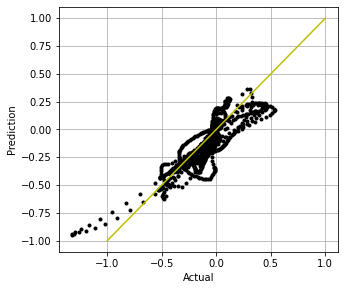
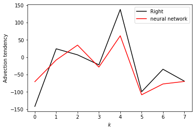
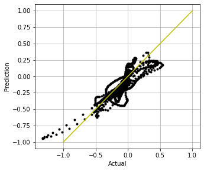
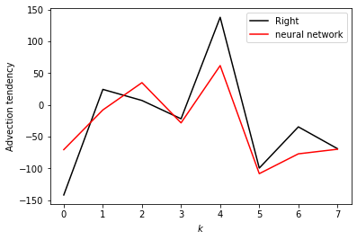
# - a GCM class including a neural network parameterization in rhs of equation for tendency
# The advection will be set to False
class GCM_network:
def __init__(self, F, network, time_stepping=time_method):
self.F = F
self.network = network
self.time_stepping = time_stepping
def rhs(self, X, param):
if self.network.linear1.in_features == 1:
X_torch = torch.from_numpy(X / self.F).double()
X_torch = torch.unsqueeze(X_torch, 1)
else:
X_torch = torch.from_numpy(np.expand_dims(X / self.F, 0)).double()
return L96_eq1_xdot(
X,
self.F + self.F**2 * np.squeeze(self.network(X_torch).data.numpy()),
advect=False,
) # Adding NN parameterization
def __call__(self, X0, dt, nt, param=[0]):
# X0 - initial conditions, dt - time increment, nt - number of forward steps to take
# param - parameters of our closure
time, hist, X = (
dt * np.arange(nt + 1),
np.zeros((nt + 1, len(X0))) * np.nan,
X0.copy(),
)
hist[0] = X
for n in range(nt):
X = self.time_stepping(self.rhs, dt, X, param)
hist[n + 1], time[n + 1] = X, dt * (n + 1)
return hist, time
# Run a test with the parameterization
# It takes some time, but usually the network goes unstable eventually
# F=10 model
gcm_nn = GCM_network(Forcing, nn_3l)
xnn, tnn = gcm_nn(init_cond, dt, int(100 / (dt)), nn_3l)
CompExps(
[t2d, x2d, "2d"],
[
[tnn, xnn, "1d w/ neural network"],
],
)


# Try to train the data with slightly higher forcing (will give larger range of advection tendencies to learn)
plt.figure()
plt.plot(X, Adv, "k.")
plt.xlabel("$X_k$")
plt.ylabel("$Adv_k$")
# for F=20
X_F = X_x10 / Forcing_x10
Adv_F = Adv_x10 / Forcing_x10**2
print("Advection RMS:", np.sqrt(np.mean(Adv**2)))
print("X RMS:", np.sqrt(np.mean(X**2)))
plt.figure()
plt.plot(X_F, Adv_F, "k.")
plt.xlabel("$X_k/F$")
plt.ylabel("$Adv_k/F^2$")
print("Scaled Advection RMS:", np.sqrt(np.mean(Adv_F**2)))
print("Scaled X RMS:", np.sqrt(np.mean(X_F**2)))
# Split into 80% training and 20% testing.
L = int(len(X) * 0.8)
# Create non local training data
# Define a data loader (8 inputs, 8 outputs)
# Define our X,Y pairs (state, subgrid tendency) for the linear regression local network.local_torch_dataset = Data.TensorDataset(
torch_dataset = Data.TensorDataset(
torch.from_numpy(np.array(X_F[:L])).double(),
torch.from_numpy(np.array(Adv_F[:L])).double(),
)
BATCH_SIZE = 1024 # Number of sample in each batch
loader = Data.DataLoader(dataset=torch_dataset, batch_size=BATCH_SIZE, shuffle=True)
print("N training data: ", len(X_F[:L]))
print("N testing data: ", len(X_F[L:]))
# Define a test dataloader (8 inputs, 8 outputs)
torch_dataset_test = Data.TensorDataset(
torch.from_numpy(np.array(X_F[L:])).double(),
torch.from_numpy(np.array(Adv_F[L:])).double(),
)
loader_test = Data.DataLoader(
dataset=torch_dataset_test, batch_size=BATCH_SIZE, shuffle=True
)
Advection RMS: 29.02674698452924
X RMS: 5.158436463474776
Scaled Advection RMS: 0.19194660186704174
Scaled X RMS: 0.4105046510745612
N training data: 40000
N testing data: 10000
torch.manual_seed(14) # For reproducibility
nn_3l_x10 = Net_ANN().double()
n_epochs = 20 # Number of epocs
optimizer = optim.Adam(nn_3l_x10.parameters(), lr=0.03)
validation_loss = list()
train_loss = list()
# time0 = time()
for epoch in range(1, n_epochs + 1):
train_model(nn_3l_x10, criterion, loader, optimizer)
train_loss.append(test_model(nn_3l_x10, criterion, loader, optimizer, "train"))
validation_loss.append(test_model(nn_3l_x10, criterion, loader_test, optimizer))
plt.plot(train_loss, "b", label="training loss")
plt.plot(validation_loss, "r", label="validation loss")
plt.legend()
# Look how network does for the tendencies
preds22 = nn_3l_x10(torch.from_numpy(np.array(X_F)).double())
plt.figure()
plt.plot(preds22.detach().numpy()[0:1000, 2], label="NN Predicted values")
plt.plot(Adv_F[:1000, 2], label="True values")
plt.legend()
plt.xlim(0, 200)
plt.ylabel("scaled tendency")
plt.xlabel("time step")
plt.figure(figsize=(5, 4.5))
plt.plot(Adv_F[:1000, 2], preds22.detach().numpy()[0:1000, 2], "k.")
plt.xlabel("Actual")
plt.ylabel("Prediction")
plt.grid(True)
plt.plot([-1, 1], [-1, 1], "y-")
pass
Xt = init_cond
Advr = -np.roll(Xt, 1) * (np.roll(Xt, 2) - np.roll(Xt, -1))
nnAdv = nn_3l_x10(torch.from_numpy(np.array(Xt / Forcing)).double()).detach().numpy()
plt.figure()
plt.plot(Advr, "k-", label="Right")
plt.plot(nnAdv * Forcing_x10**2, "r-", label="neural network")
plt.xlabel(r"$k$")
plt.ylabel("Advection tendency")
plt.legend()
train loss: 0.016916568971414435
validation loss: 0.017683533127167243
train loss: 0.010940635095835895
validation loss: 0.011834508990656592
train loss: 0.010091913080447287
validation loss: 0.011084067394292511
train loss: 0.009474878836549018
validation loss: 0.010291349147456358
train loss: 0.008661357793216942
validation loss: 0.009421744615772783
train loss: 0.00793954521479717
validation loss: 0.008637398233906506
train loss: 0.00738476898897242
validation loss: 0.007870193004441344
train loss: 0.007657022451235611
validation loss: 0.008133774805968554
train loss: 0.007315257729630498
validation loss: 0.007891752096567586
train loss: 0.007623395027482024
validation loss: 0.008272490734615036
train loss: 0.006687285806132715
validation loss: 0.007122694478626228
train loss: 0.007675495103052281
validation loss: 0.00826359314087252
train loss: 0.006541723775737135
validation loss: 0.0069631876248922725
train loss: 0.006732586283380001
validation loss: 0.007001973633100078
train loss: 0.006769192955964054
validation loss: 0.007158413635737148
train loss: 0.006329972471913225
validation loss: 0.006774391947949697
train loss: 0.00670819037135117
validation loss: 0.0070438789309842775
train loss: 0.006415781644496581
validation loss: 0.006781840807246276
train loss: 0.006359510976177795
validation loss: 0.006727460665869776
train loss: 0.005933610206908902
validation loss: 0.006293137932890484
<matplotlib.legend.Legend at 0x7f1516bf4a60>


# Run a test with the parameterization built from F=20
# Usually the neural network resulting is much more stable, since it is trained for a wider range of conditions.
# F=10 model
gcm_nn = GCM_network(Forcing, nn_3l_x10)
xnn, tnn = gcm_nn(init_cond, dt, int(100 / (dt)), nn_3l_x10)
CompExps(
[t2d, x2d, "2d"],
[
[tnn, xnn, "1d w/ neural network"],
],
)
 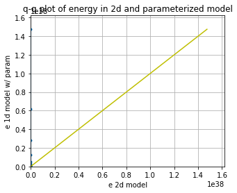
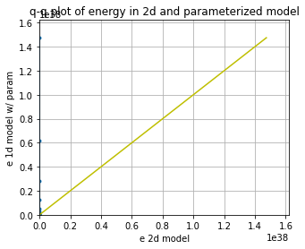
# F=20 model fails still
gcm_nn_x10 = GCM_network(Forcing_x10, nn_3l_x10)
xnn_x10, tnn_x10 = gcm_nn_x10(init_cond, dt, int(100 / (dt)), nn_3l_x10)
CompExps(
[t2d_x10, x2d_x10, "2d"],
[
[tnn_x10, xnn_x10, "1d w/ neural network"],
],
)
Here we experiment with adding conservation of “momentum”¶
It turns out the L96 advection does not conserve momentum, but this exercise shows that we can build a parameterization that does by adding it to the loss function.
def my_loss2(inpt, output, target):
# In which we add conservation of "momentum" to our loss function
loss = torch.mean(2 * (output - target) ** 2) + torch.mean(
torch.sum(output, axis=1) ** 2
)
return loss
# New training routines that use the new loss function
def train_model2(net, criterion, trainloader, optimizer):
net.train()
test_loss = 0
for step, (batch_x, batch_y) in enumerate(trainloader): # for each training step
b_x = Variable(batch_x) # Inputs
b_y = Variable(batch_y) # outputs
if (
len(b_x.shape) == 1
): # If is needed to add a dummy dimension if our inputs are 1D (where each number is a different sample)
prediction = torch.squeeze(
net(torch.unsqueeze(b_x, 1))
) # input x and predict based on x
else:
prediction = net(b_x)
loss = criterion(b_x, prediction, b_y) # Calculating loss
optimizer.zero_grad() # clear gradients for next train
loss.backward() # backpropagation, compute gradients
optimizer.step() # apply gradients to update weights
def test_model2(net, criterion, trainloader, optimizer, text="validation"):
net.eval() # Evaluation mode (important when having dropout layers)
test_loss = 0
with torch.no_grad():
for step, (batch_x, batch_y) in enumerate(
trainloader
): # for each training step
b_x = Variable(batch_x) # Inputs
b_y = Variable(batch_y) # outputs
if (
len(b_x.shape) == 1
): # If is needed to add a dummy dimension if our inputs are 1D (where each number is a different sample)
prediction = torch.squeeze(
net(torch.unsqueeze(b_x, 1))
) # input x and predict based on x
else:
prediction = net(b_x)
loss = criterion(b_x, prediction, b_y) # Calculating loss
test_loss = test_loss + loss.data.numpy() # Keep track of the loss
test_loss /= len(trainloader) # dividing by the number of batches
# print(len(trainloader))
print(text + " loss:", test_loss)
return test_loss
torch.manual_seed(14) # For reproducibility
nn_3l_loss2 = Net_ANN().double()
n_epochs = 30 # Number of epocs
optimizer = optim.Adam(nn_3l_loss2.parameters(), lr=0.02)
validation_loss = list()
train_loss = list()
# time0 = time()
for epoch in range(1, n_epochs + 1):
train_model2(nn_3l_loss2, my_loss2, loader, optimizer)
train_loss.append(test_model2(nn_3l_loss2, my_loss2, loader, optimizer, "train"))
validation_loss.append(test_model2(nn_3l_loss2, my_loss2, loader_test, optimizer))
plt.plot(train_loss, "b", label="training loss")
plt.plot(validation_loss, "r", label="validation loss")
plt.legend();
train loss: 0.07033973352047176
validation loss: 0.06994463979965279
train loss: 0.06052226142500432
validation loss: 0.06084866899207728
train loss: 0.04936527535728145
validation loss: 0.04982267975377732
train loss: 0.04398313673890705
validation loss: 0.04450906200846788
train loss: 0.04045652505715882
validation loss: 0.04114996263450295
train loss: 0.03744186829477144
validation loss: 0.038000927800051945
train loss: 0.03451296268554057
validation loss: 0.03496188000172342
train loss: 0.03295570748097433
validation loss: 0.03350866157992504
train loss: 0.03113242257406603
validation loss: 0.03181646122140366
train loss: 0.02932184674113123
validation loss: 0.03024383949158143
train loss: 0.027753329229998687
validation loss: 0.0288054003398246
train loss: 0.02643301333343731
validation loss: 0.02723691552970121
train loss: 0.02569016832954747
validation loss: 0.02666030143901809
train loss: 0.02580434892311025
validation loss: 0.026577373712596553
train loss: 0.02457530884705073
validation loss: 0.025417332070115532
train loss: 0.025131544696585233
validation loss: 0.025673965992398434
train loss: 0.023775533818272365
validation loss: 0.024501783320901742
train loss: 0.024645030603275407
validation loss: 0.025646121085704094
train loss: 0.02314391344522058
validation loss: 0.024239048859854628
train loss: 0.023716448798533254
validation loss: 0.024384391568722436
train loss: 0.022575579997832045
validation loss: 0.023536153066610783
train loss: 0.022551062965036655
validation loss: 0.023614393694739146
train loss: 0.022590190876298828
validation loss: 0.023481737053578887
train loss: 0.024520458975436747
validation loss: 0.02573784857552856
train loss: 0.022139446626900657
validation loss: 0.023121374068298235
train loss: 0.02275200938468132
validation loss: 0.023654873011367664
train loss: 0.022151753180144628
validation loss: 0.023121502368300892
train loss: 0.021580304565175828
validation loss: 0.022623372652665216
train loss: 0.02339189775103348
validation loss: 0.02422379439835458
train loss: 0.021588654775783745
validation loss: 0.022677970316709536
# The neural network now conserves momentum
preds22o = nn_3l(torch.from_numpy(np.array(X_F)).double())
preds22 = nn_3l_loss2(torch.from_numpy(np.array(X_F)).double())
plt.figure()
plt.plot(preds22.detach().numpy()[0:1000, 2], label="NN Predicted values")
plt.plot(Adv_F[:1000, 2], label="True values")
plt.legend()
plt.figure()
plt.plot(Adv_F[:1000, 2], preds22.detach().numpy()[0:1000, 2], "k.")
plt.xlabel("Actual")
plt.ylabel("Prediction")
plt.figure()
plt.plot(np.sum(preds22o.detach().numpy(), axis=1), "r.", label="original loss")
plt.plot(np.sum(preds22.detach().numpy(), axis=1), "k.", label="new loss")
plt.ylabel("Prediction momentum tendency")
plt.legend()
Xt = init_cond
Advr = -np.roll(Xt, 1) * (np.roll(Xt, 2) - np.roll(Xt, -1))
nnAdv = nn_3l_loss2(torch.from_numpy(np.array(Xt / Forcing)).double()).detach().numpy()
plt.figure()
plt.plot(Advr, "k-", label="actual")
plt.plot(nnAdv * Forcing**2, "r-", label="predicted")
pass;
 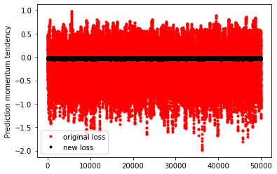
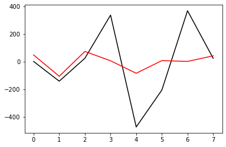
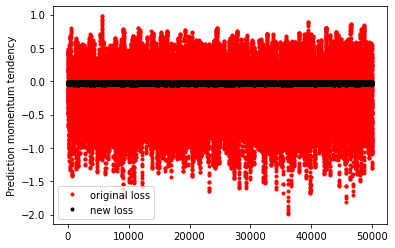
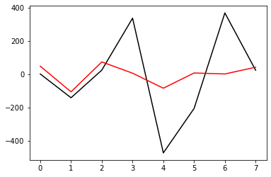
# This didn't help with stabilization...actually seems to hurt
gcm_nn2 = GCM_network(Forcing, nn_3l_loss2)
xnn2, tnn2 = gcm_nn2(init_cond, dt, int(T / (dt)), nn_3l_loss2)
CompExps(
[t2d, x2d, "2d"],
[
[tnn2, xnn2, "1d w/ NN conserving momentum"],
],
)
How about with some regularization?¶
torch.manual_seed(14) # For reproducibility
nn_3l_loss3 = Net_ANN().double()
n_epochs = 20 # Number of epocs
optimizer = optim.Adam(nn_3l_loss3.parameters(), lr=0.03, weight_decay=0.0015)
validation_loss = list()
train_loss = list()
# time0 = time()
for epoch in range(1, n_epochs + 1):
train_model(nn_3l_loss3, criterion, loader, optimizer)
train_loss.append(test_model(nn_3l_loss3, criterion, loader, optimizer, "train"))
validation_loss.append(test_model(nn_3l_loss3, criterion, loader_test, optimizer))
plt.plot(train_loss, "b", label="training loss")
plt.plot(validation_loss, "r", label="validation loss")
plt.legend()
# Look how network does for the tendencies
preds22 = nn_3l_loss3(torch.from_numpy(np.array(X_F)).double())
plt.figure()
plt.plot(preds22.detach().numpy()[0:1000, 2], label="NN Predicted values")
plt.plot(Adv_F[:1000, 2], label="True values")
plt.legend()
plt.xlim(0, 200)
plt.ylabel("scaled tendency")
plt.xlabel("time step")
plt.figure(figsize=(5, 4.5))
plt.plot(Adv_F[:1000, 2], preds22.detach().numpy()[0:1000, 2], "k.")
plt.xlabel("Actual")
plt.ylabel("Prediction")
plt.grid(True)
plt.plot([-1, 1], [-1, 1], "y-")
pass
Xt = init_cond
Advr = -np.roll(Xt, 1) * (np.roll(Xt, 2) - np.roll(Xt, -1))
nnAdv = (
nn_3l_loss3(torch.from_numpy(np.array(Xt / Forcing_x10)).double()).detach().numpy()
)
plt.figure()
plt.plot(Advr, "k-", label="Right")
plt.plot(nnAdv * Forcing_x10**2, "r-", label="neural network")
plt.xlabel(r"$k$")
plt.ylabel("Advection tendency")
plt.legend()
train loss: 0.027187595719737064
validation loss: 0.027625717935635858
train loss: 0.023375876297283653
validation loss: 0.02356382705476601
train loss: 0.021510614688000803
validation loss: 0.021618750297040124
train loss: 0.019707814244352535
validation loss: 0.020103331737124308
train loss: 0.01960239277632744
validation loss: 0.01984670862573721
train loss: 0.017816480794976188
validation loss: 0.017979074967598648
train loss: 0.017368735575383088
validation loss: 0.01764058999276344
train loss: 0.015518252802458605
validation loss: 0.01591434532228124
train loss: 0.015833493925069764
validation loss: 0.0161694445979967
train loss: 0.015118887044442706
validation loss: 0.015646559242254894
train loss: 0.01485551528897903
validation loss: 0.015289545387775539
train loss: 0.015511389187973013
validation loss: 0.015877700374929044
train loss: 0.01530046909138116
validation loss: 0.015806150069615815
train loss: 0.015110001426747071
validation loss: 0.01558002984985547
train loss: 0.01542390736781061
validation loss: 0.015715628064020378
train loss: 0.01508042046670025
validation loss: 0.015383460052995443
train loss: 0.01569023930644968
validation loss: 0.015733251611334435
train loss: 0.015431654010099726
validation loss: 0.015838490219747075
train loss: 0.015780328197651065
validation loss: 0.016257271092227764
train loss: 0.015375125171394537
validation loss: 0.015601116606609258
<matplotlib.legend.Legend at 0x7f152e41d370>


 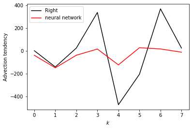
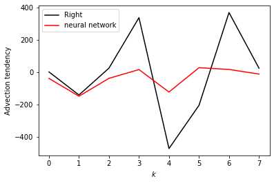
# Weight decay regularization can help with stability, but when it does it sometimes ruins the
# model representation of the actual 'physics'
gcm_nn3 = GCM_network(Forcing, nn_3l_loss3)
xnn3, tnn3 = gcm_nn3(init_cond, dt, int(T / (dt)), nn_3l_loss3)
CompExps(
[t2d, x2d, "2d"],
[
[tnn3, xnn3, "1d w/ NN momentum reg."],
],
)
# Here it actually does an okay job of producing the F=20 simulation
gcm_nn3_x10 = GCM_network(Forcing_x10, nn_3l_loss3)
xnn3_x10, tnn3_x10 = gcm_nn3_x10(init_cond, dt, int(T / (dt)), nn_3l_loss3)
CompExps(
[t2d_x10, x2d_x10, "2d"],
[
[tnn3_x10, xnn3_x10, "1d w/ NN momentum reg."],
],
)
Try a different scaling term¶
Could scaling with the Forcing be the issue?
# Use the advection tendencies, splitting into 80% training and 20% testing.
L = int(len(X) * 0.8)
print(L)
ScX = np.sqrt(np.mean(X**2))
X_S = X_x10 / ScX
ScA = np.sqrt(np.mean(Adv**2))
Adv_S = Adv_x10 / ScA
# Create non local training data
# Define a data loader (8 inputs, 8 outputs)
# Define our X,Y pairs (state, subgrid tendency) for the linear regression local network.local_torch_dataset = Data.TensorDataset(
torch_dataset = Data.TensorDataset(
torch.from_numpy(np.array(X_S[:L])).double(),
torch.from_numpy(np.array(Adv_S[:L])).double(),
)
BATCH_SIZE = 1024 # Number of sample in each batch
loader = Data.DataLoader(dataset=torch_dataset, batch_size=BATCH_SIZE, shuffle=True)
# Define a test dataloader (8 inputs, 8 outputs)
torch_dataset_test = Data.TensorDataset(
torch.from_numpy(np.array(X_S[L:])).double(),
torch.from_numpy(np.array(Adv_S[L:])).double(),
)
loader_test = Data.DataLoader(
dataset=torch_dataset_test, batch_size=BATCH_SIZE, shuffle=True
)
40000
torch.manual_seed(14) # For reproducibility
nn_3l_loss4 = Net_ANN().double()
n_epochs = 20 # Number of epocs
optimizer = optim.Adam(nn_3l_loss4.parameters(), lr=0.03, weight_decay=0.001)
validation_loss = list()
train_loss = list()
# time0 = time()
for epoch in range(1, n_epochs + 1):
train_model(nn_3l_loss4, criterion, loader, optimizer)
train_loss.append(test_model(nn_3l_loss4, criterion, loader, optimizer, "train"))
validation_loss.append(test_model(nn_3l_loss4, criterion, loader_test, optimizer))
plt.plot(train_loss, "b", label="training loss")
plt.plot(validation_loss, "r", label="validation loss")
plt.legend()
# Look how network does for the tendencies
preds22 = nn_3l_loss4(torch.from_numpy(np.array(X_S)).double())
plt.figure()
plt.plot(preds22.detach().numpy()[0:1000, 2], label="NN Predicted values")
plt.plot(Adv_S[:1000, 2], label="True values")
plt.legend()
plt.xlim(0, 200)
plt.ylabel("scaled tendency")
plt.xlabel("time step")
plt.figure(figsize=(5, 4.5))
plt.plot(Adv_S[:1000, 2], preds22.detach().numpy()[0:1000, 2], "k.")
plt.xlabel("Actual")
plt.ylabel("Prediction")
plt.grid(True)
plt.plot([-1, 1], [-1, 1], "y-")
pass
Xt = init_cond
Advr = -np.roll(Xt, 1) * (np.roll(Xt, 2) - np.roll(Xt, -1))
nnAdv = nn_3l_loss4(torch.from_numpy(np.array(Xt / ScX)).double()).detach().numpy()
plt.figure()
plt.plot(Advr, "k-", label="Right")
plt.plot(nnAdv * ScA, "r-", label="neural network")
plt.xlabel(r"$k$")
plt.ylabel("Advection tendency")
plt.legend()
train loss: 2.593725846900581
validation loss: 2.688594567894582
train loss: 1.6837096997739462
validation loss: 1.7634169319005646
train loss: 1.3295248682727956
validation loss: 1.420540311520008
train loss: 1.1860991577081823
validation loss: 1.2592485467363923
train loss: 1.1071136190007558
validation loss: 1.1737330705540838
train loss: 1.1246272545576164
validation loss: 1.2104241579561041
train loss: 0.9632784957045427
validation loss: 1.0235757493234892
train loss: 0.9012445202981842
validation loss: 0.9551818579561902
train loss: 0.9227053418725886
validation loss: 0.9988210121159675
train loss: 0.8702294134204109
validation loss: 0.9416331628945548
train loss: 0.8230119645369125
validation loss: 0.8996499794680162
train loss: 0.9015035980558638
validation loss: 0.972894286993218
train loss: 0.8222063052619243
validation loss: 0.8783492638290232
train loss: 0.8608938148846301
validation loss: 0.9197911978083653
train loss: 0.8152679757727757
validation loss: 0.8726711557318906
train loss: 0.7976503222937709
validation loss: 0.8488105477585502
train loss: 0.8954546187566347
validation loss: 0.9473485922745407
train loss: 0.7986643735941933
validation loss: 0.8518690402537945
train loss: 0.7919358529794484
validation loss: 0.8303474794787569
train loss: 0.8153160242755645
validation loss: 0.8546707586563016
<matplotlib.legend.Legend at 0x7f1516ca02b0>

 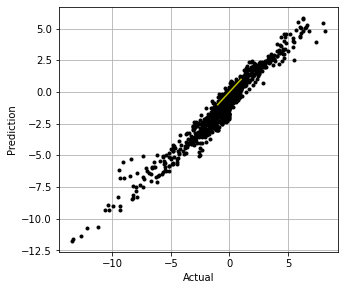
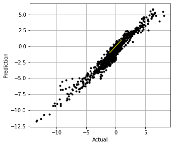

# - a GCM class including a neural network parameterization in rhs of equation for tendency
class GCM_network_S:
def __init__(self, F, network, time_stepping=time_method):
self.F = F
self.network = network
self.time_stepping = time_stepping
def rhs(self, X, param):
if self.network.linear1.in_features == 1:
X_torch = torch.from_numpy(X / ScX).double()
X_torch = torch.unsqueeze(X_torch, 1)
else:
X_torch = torch.from_numpy(np.expand_dims(X / ScX, 0)).double()
return L96_eq1_xdot(
X,
self.F + ScA * np.squeeze(self.network(X_torch).data.numpy()),
advect=False,
) # Adding NN parameterization
def __call__(self, X0, dt, nt, param=[0]):
# X0 - initial conditions, dt - time increment, nt - number of forward steps to take
# param - parameters of our closure
time, hist, X = (
dt * np.arange(nt + 1),
np.zeros((nt + 1, len(X0))) * np.nan,
X0.copy(),
)
hist[0] = X
for n in range(nt):
X = self.time_stepping(self.rhs, dt, X, param)
hist[n + 1], time[n + 1] = X, dt * (n + 1)
return hist, time
# Usually the network this produces works okay w/ F=10
gcm_nn4 = GCM_network_S(Forcing, nn_3l_loss4)
xnn4, tnn4 = gcm_nn4(init_cond, dt, int(T / dt), nn_3l_loss4)
CompExps(
[t2d, x2d, "2d"],
[
[tnn4, xnn4, "1d w/ rescaled NN mom."],
],
)
# This might work well for F=20
gcm_nn4_x10 = GCM_network_S(Forcing_x10, nn_3l_loss4)
xnn4_x10, tnn4_x10 = gcm_nn4_x10(init_cond, dt, int(T / dt), nn_3l_loss4)
CompExps(
[t2d_x10, x2d_x10, "2d"],
[
[tnn4_x10, xnn4_x10, "1d w/ rescaled NN mom."],
],
)


The actual conservation law should be for “energy”¶
Does this stabilize the model?
def my_loss3(inpt, output, target):
# In which we replace conservation of "momentum" with conservation of "energy"
loss = torch.mean(2 * (output - target) ** 2) + WT * torch.mean(
torch.sum(inpt * output, axis=1) ** 2
)
return loss
WT = 1
torch.manual_seed(14) # For reproducibility
nn_3l_loss5 = Net_ANN().double()
n_epochs = 50 # Number of epocs
optimizer = optim.Adam(nn_3l_loss5.parameters(), lr=0.01)
validation_loss = list()
train_loss = list()
# time0 = time()
for epoch in range(1, n_epochs + 1):
train_model2(nn_3l_loss5, my_loss3, loader, optimizer)
train_loss.append(test_model2(nn_3l_loss5, my_loss3, loader, optimizer, "train"))
validation_loss.append(test_model2(nn_3l_loss5, my_loss3, loader_test, optimizer))
plt.plot(train_loss, "b", label="training loss")
plt.plot(validation_loss, "r", label="validation loss")
plt.legend();
train loss: 11.22357910813178
validation loss: 11.300110291633315
train loss: 9.202636168209754
validation loss: 9.313645325590091
train loss: 8.3047042360697
validation loss: 8.542537076097624
train loss: 7.713652807600963
validation loss: 8.001563292795666
train loss: 7.714182140040906
validation loss: 7.964692107059605
train loss: 7.240464120457064
validation loss: 7.591520662400024
train loss: 7.0700087067842095
validation loss: 7.455517557136112
train loss: 7.148181988599127
validation loss: 7.568491506490001
train loss: 7.014093491248775
validation loss: 7.463296312530121
train loss: 6.66241688213084
validation loss: 7.143915597142358
train loss: 6.517518300764844
validation loss: 7.021994597517851
train loss: 7.10364980555133
validation loss: 7.489138700487136
train loss: 6.331264254605158
validation loss: 6.843541643453145
train loss: 6.497690509217856
validation loss: 6.96634954872331
train loss: 6.803706102124008
validation loss: 7.240768664050623
train loss: 6.236711295928705
validation loss: 6.752187208047988
train loss: 6.27034881104741
validation loss: 6.77179478962118
train loss: 6.232831654033316
validation loss: 6.681708563354638
train loss: 6.054155736188687
validation loss: 6.592536845601964
train loss: 6.056761352144241
validation loss: 6.613523579716016
train loss: 6.323115174018628
validation loss: 6.832389142437653
train loss: 6.021226620239783
validation loss: 6.537257364475477
train loss: 6.493852124477174
validation loss: 6.977341495345779
train loss: 6.051828727108228
validation loss: 6.587032545622807
train loss: 5.990076933034212
validation loss: 6.5376660089469265
train loss: 5.99347630428973
validation loss: 6.5570468342778625
train loss: 5.937630712544735
validation loss: 6.393246799369328
train loss: 6.2478322464397005
validation loss: 6.748535511634971
train loss: 5.813666597623003
validation loss: 6.348018687668354
train loss: 5.826443079010649
validation loss: 6.24977670296241
train loss: 5.784380858813992
validation loss: 6.332012322157419
train loss: 5.676600062813715
validation loss: 6.125605677799559
train loss: 6.1365732939048945
validation loss: 6.674519422358314
train loss: 5.684160715017468
validation loss: 6.124700526732904
train loss: 5.595315893632301
validation loss: 6.089348991106846
train loss: 5.7366939389258045
validation loss: 6.197425145591916
train loss: 5.730124844099963
validation loss: 6.226177547384937
train loss: 5.527375861967755
validation loss: 5.995542162804363
train loss: 5.583031146978528
validation loss: 6.112652268423009
train loss: 5.492942013841332
validation loss: 5.9884767354914015
train loss: 5.290323501681844
validation loss: 5.868874584679339
train loss: 5.397106445602816
validation loss: 5.935564811285494
train loss: 5.401698517845767
validation loss: 5.9484016500562
train loss: 5.885307358689665
validation loss: 6.41486860186222
train loss: 5.3044455361174245
validation loss: 5.821693293450991
train loss: 5.442326638113235
validation loss: 5.96359644196915
train loss: 5.4349312368777785
validation loss: 6.000242012803385
train loss: 5.389931049402433
validation loss: 5.904591107586477
train loss: 5.3317233463358304
validation loss: 5.886151118205575
train loss: 5.24639496449131
validation loss: 5.799028717269975
preds22o = nn_3l_loss4(torch.from_numpy(np.array(X_S)).double())
preds22 = nn_3l_loss5(torch.from_numpy(np.array(X_S)).double())
plt.figure()
plt.plot(preds22.detach().numpy()[0:1000, 2], label="NN Predicted values")
plt.plot(Adv_S[:1000, 2], label="True values")
plt.legend()
plt.figure()
plt.plot(Adv_S[:1000, 2], preds22.detach().numpy()[0:1000, 2], "k.")
plt.xlabel("Actual")
plt.ylabel("Prediction")
plt.figure()
plt.plot(np.sum(X * preds22o.detach().numpy() * ScA, axis=1), "r.")
plt.plot(np.sum(X * preds22.detach().numpy() * ScA, axis=1), "k.")
plt.ylabel("Prediction energy")
Xt = init_cond
Advr = -np.roll(Xt, 1) * (np.roll(Xt, 2) - np.roll(Xt, -1))
nnAdv = nn_3l_loss5(torch.from_numpy(np.array(Xt / Forcing)).double()).detach().numpy()
plt.figure()
plt.plot(Advr, "k-", label="actual")
plt.plot(nnAdv * Forcing**2, "r-", label="predicted")
pass;
gcm_nn5 = GCM_network_S(Forcing, nn_3l_loss5)
xnn5, tnn5 = gcm_nn5(init_cond, dt, int(T / dt), nn_3l_loss5)
CompExps(
[t2d, x2d, "2d"],
[
[tnn5, xnn5, "1d w/ rescaled NN enrgy."],
],
)
gcm_nn5_x10 = GCM_network_S(Forcing_x10, nn_3l_loss5)
xnn5_x10, tnn5_x10 = gcm_nn5_x10(init_cond, dt, int(T / dt), nn_3l_loss5)
CompExps(
[t2d_x10, x2d_x10, "2d"],
[
[tnn5_x10, xnn5_x10, "1d w/ rescaled NN enrgy."],
],
)
# Try with a higher weight?
WT = 50
torch.manual_seed(14) # For reproducibility
nn_3l_loss6 = Net_ANN().double()
n_epochs = 50 # Number of epocs
optimizer = optim.Adam(nn_3l_loss6.parameters(), lr=0.01)
validation_loss = list()
train_loss = list()
# time0 = time()
for epoch in range(1, n_epochs + 1):
train_model2(nn_3l_loss6, my_loss3, loader, optimizer)
train_loss.append(test_model2(nn_3l_loss6, my_loss3, loader, optimizer, "train"))
validation_loss.append(test_model2(nn_3l_loss6, my_loss3, loader_test, optimizer))
plt.plot(train_loss, "b", label="training loss")
plt.plot(validation_loss, "r", label="validation loss")
plt.legend();
train loss: 14.145016059467475
validation loss: 14.144932029570322
train loss: 13.980254852312498
validation loss: 14.055454010805652
train loss: 13.997515074545793
validation loss: 14.049310134577018
train loss: 13.984754371508975
validation loss: 14.021838500785568
train loss: 13.963731797766002
validation loss: 14.019711937867337
train loss: 13.994172749450346
validation loss: 13.996990711295675
train loss: 13.935080700425527
validation loss: 13.971672826899669
train loss: 13.966414290322556
validation loss: 13.96195626066897
train loss: 13.968433128461047
validation loss: 13.937424775512696
train loss: 13.83144697549109
validation loss: 13.918538934360043
train loss: 13.736274347747056
validation loss: 13.856686157893597
train loss: 13.79638135458739
validation loss: 13.789984610212915
train loss: 13.562580771579258
validation loss: 13.636444076704711
train loss: 13.464801378378642
validation loss: 13.529730368017274
train loss: 13.548943888253657
validation loss: 13.506061804768382
train loss: 13.21995079152617
validation loss: 13.278580829267543
train loss: 13.222165396696848
validation loss: 13.162623261447383
train loss: 13.394578389897873
validation loss: 13.383521470165505
train loss: 14.029934750096256
validation loss: 14.182547203231346
train loss: 12.859251823792729
validation loss: 12.87419843024949
train loss: 12.961600801014475
validation loss: 12.96197462640527
train loss: 14.942100936372594
validation loss: 15.072052195462382
train loss: 12.772556535445823
validation loss: 12.792840428866931
train loss: 12.772816388803943
validation loss: 12.851510152657832
train loss: 12.552861272831379
validation loss: 12.616020313813127
train loss: 13.644476861789062
validation loss: 13.693379170490243
train loss: 12.519721296034929
validation loss: 12.495134742825147
train loss: 13.626106940502359
validation loss: 13.863283191920567
train loss: 12.457897640818917
validation loss: 12.50827917944336
train loss: 12.436885457849042
validation loss: 12.473742610142315
train loss: 12.757906432871732
validation loss: 12.736764334708464
train loss: 12.209900118035005
validation loss: 12.242385534551959
train loss: 12.407419915177913
validation loss: 12.465737452019393
train loss: 12.377114850921705
validation loss: 12.398965947104879
train loss: 12.516532434207251
validation loss: 12.652400341570871
train loss: 12.035951682366363
validation loss: 12.105607957781727
train loss: 12.344834877809234
validation loss: 12.500348899007315
train loss: 12.467142674532203
validation loss: 12.633179062242336
train loss: 12.156184300094441
validation loss: 12.149004727768856
train loss: 13.304102473236918
validation loss: 13.426845640000437
train loss: 12.267953075180865
validation loss: 12.389277620032997
train loss: 12.694826006249615
validation loss: 12.989315176928105
train loss: 11.961480975622878
validation loss: 12.052378801003385
train loss: 12.262719159581088
validation loss: 12.340570935651629
train loss: 11.894714788181698
validation loss: 12.02495990549954
train loss: 12.368168329056932
validation loss: 12.450678743977164
train loss: 12.094409221445998
validation loss: 12.194754156614351
train loss: 11.870383433156814
validation loss: 12.012331679265793
train loss: 11.68694523915654
validation loss: 11.797104544880312
train loss: 12.568159290588785
validation loss: 12.582563970238372
preds22o = nn_3l_loss5(torch.from_numpy(np.array(X_S)).double())
preds22 = nn_3l_loss6(torch.from_numpy(np.array(X_S)).double())
plt.figure()
plt.plot(preds22.detach().numpy()[0:1000, 2], label="NN Predicted values")
plt.plot(Adv_S[:1000, 2], label="True values")
plt.legend()
plt.figure()
plt.plot(Adv_S[:1000, 2], preds22.detach().numpy()[0:1000, 2], "k.")
plt.xlabel("Actual")
plt.ylabel("Prediction")
plt.figure()
plt.plot(np.sum(preds22o.detach().numpy(), axis=1) * ScA, "r.")
plt.plot(np.sum(preds22.detach().numpy(), axis=1) * ScA, "k.")
plt.ylabel("Prediction momentum")
plt.figure()
plt.plot(np.sum(X * preds22o.detach().numpy(), axis=1) * ScA, "r.")
plt.plot(np.sum(X * preds22.detach().numpy(), axis=1) * ScA, "k.")
plt.ylabel("Prediction energy")
Xt = init_cond
Advr = -np.roll(Xt, 1) * (np.roll(Xt, 2) - np.roll(Xt, -1))
nnAdv = nn_3l_loss6(torch.from_numpy(np.array(Xt / Forcing)).double()).detach().numpy()
plt.figure()
plt.plot(Advr, "k-", label="actual")
plt.plot(nnAdv * Forcing**2, "r-", label="predicted")
pass;
 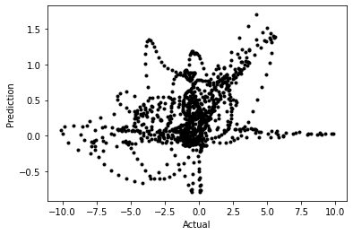
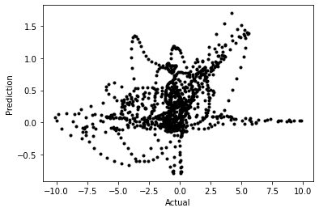
 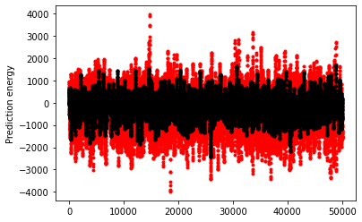
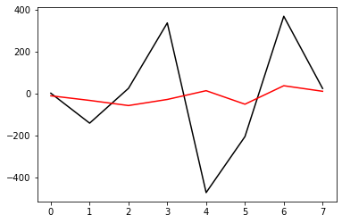
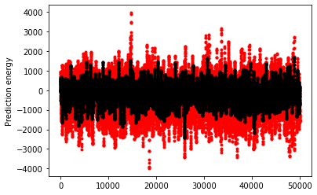
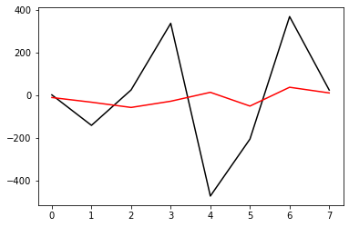
gcm_nn6 = GCM_network_S(Forcing, nn_3l_loss6)
xnn6, tnn6 = gcm_nn6(init_cond, dt, int(T / dt), nn_3l_loss6)
gcm_nn6_x10 = GCM_network_S(Forcing_x10, nn_3l_loss6)
xnn6_x10, tnn6_x10 = gcm_nn6_x10(init_cond, dt, int(T / dt), nn_3l_loss6)
CompExps(
[t2d, x2d, "2d"],
[
[tnn6, xnn6, "1d w/ rescaled NN enrgy 20"],
],
)
 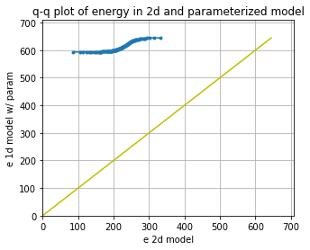
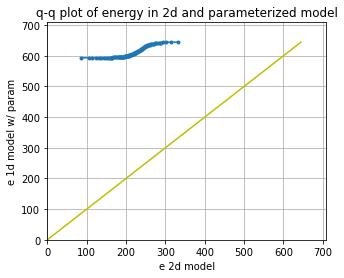
CompExps(
[t2d_x10, x2d_x10, "2d"],
[
[tnn6_x10, xnn6_x10, "1d w/ rescaled NN enrgy 20"],
],
)
NN inside of time-stepping algorithm¶
One issue may be that the network is applied as a forward Euler step. Let’s try moving the network inside the RHS that is passed to the RK4 algorithm
import torch
def L96_eq1_xdot_NN(X, F, NN, advect=True):
"""
Calculate the time rate of change for the X variables for the Lorenz '96, equation 1:
d/dt X[k] = -X[k-2] X[k-1] + X[k-1] X[k+1] - X[k] + F
Args:
X : Values of X variables at the current time step
F : Forcing term
Returns:
dXdt : Array of X time tendencies
"""
K = len(X)
Xdot = np.zeros(K)
if NN.linear1.in_features == 1:
X_torch = torch.from_numpy(X / ScX).double()
X_torch = torch.unsqueeze(X_torch, 1)
else:
X_torch = torch.from_numpy(np.expand_dims(X / ScX, 0)).double()
if advect:
Xdot = np.roll(X, 1) * (np.roll(X, -1) - np.roll(X, 2)) - X + F
else:
Xdot = -X + F + ScA * np.squeeze(NN(X_torch).data.numpy())
# for k in range(K):
# Xdot[k] = ( X[(k+1)%K] - X[k-2] ) * X[k-1] - X[k] + F
return Xdot
# - a GCM class including a neural network parameterization in rhs of equation for tendency
class GCM_network_tsNN:
def __init__(self, F, network, time_stepping=time_method):
self.F = F
self.network = network
self.time_stepping = time_stepping
def rhs(self, X, param):
return L96_eq1_xdot_NN(
X, self.F, self.network, advect=False
) # Adding NN parameterization
def __call__(self, X0, dt, nt, param=[0]):
# X0 - initial conditions, dt - time increment, nt - number of forward steps to take
# param - parameters of our closure
time, hist, X = (
dt * np.arange(nt + 1),
np.zeros((nt + 1, len(X0))) * np.nan,
X0.copy(),
)
hist[0] = X
for n in range(nt):
X = self.time_stepping(self.rhs, dt, X, param)
hist[n + 1], time[n + 1] = X, dt * (n + 1)
return hist, time
# Run a test with the parameterization
gcm_nnRK = GCM_network_tsNN(Forcing, nn_3l_x10, time_stepping=RK4)
xnnRK, tnnRK = gcm_nnRK(init_cond, dt, int(100 / (dt)), nn_3l)
CompExps(
[t2d, x2d, "2d"],
[
[tnnRK, xnnRK, "1d w/ RK4 neural network"],
],
)


# Run a test with the parameterization
gcm_nnRK_x10 = GCM_network_tsNN(Forcing_x10, nn_3l_x10, time_stepping=RK4)
xnnRK_x10, tnnRK_x10 = gcm_nnRK_x10(init_cond, dt, int(100 / (dt)), nn_3l)
CompExps(
[t2d_x10, x2d_x10, "2d"],
[
[tnnRK_x10, xnnRK_x10, "1d w/ RK4 neural network"],
],
)
Conclusions¶
Conservation properties can be added to the loss function, but may not improve stability.
Conservation can unintentially over-regulate a network.
Training a network for a wider parameter space than the model sees can help with stability.
Training with F=20 helps F=10 stay stable
Training for too broad of a parameter space may limit model ability to capture complex behavior (not shown, with F=100 tuning)
Careful scaling is needed to help extrapolate results across parameter space.
It was wrong to scale with forcing, scaling from the mean helps.
We could also consider more stability approaches, for example:
How you build the parameterization matters. Building a parameterization for a flux instead of a flux tendency can help avoid non-conservation (not as applicable to our problem here, but seen in boundary layer parameterizations).
Coupled online learning can help tune networks that can learn evolving parameter spaces (see Rasp 2020 and their notebooks).